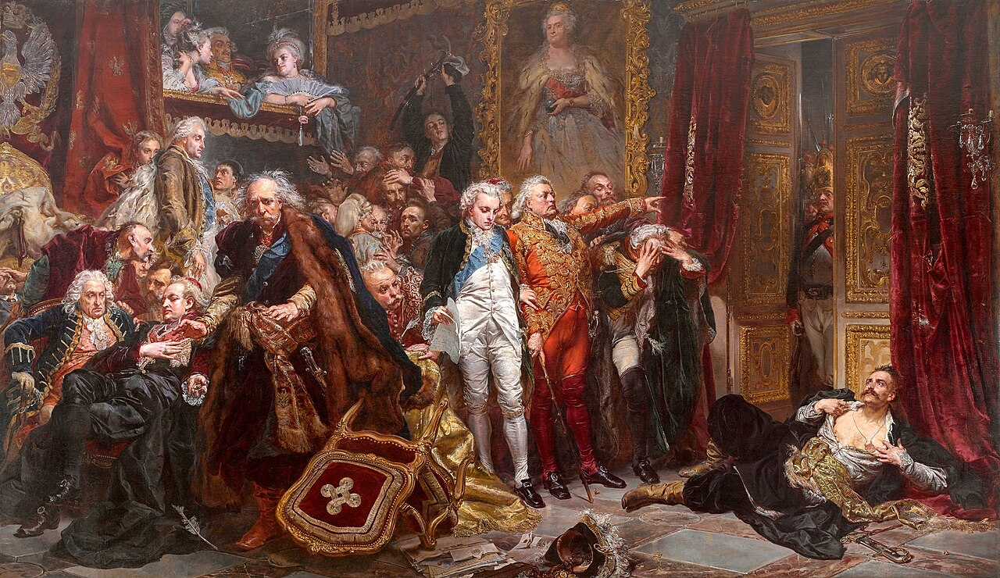

KOD UCZNIA:
Materiał autorski. Formę zadań opracowano z uwzględnieniem archiwów kilku kuratoriów, a treści sprawdzono w materiałach ZPE, źródłach instytucji publicznych i podręcznikach dopuszczonych do użytku szkolnego. Arkusz nie jest oficjalnym dokumentem konkursowym.
Podaj wiek, w którym miało miejsce każde wydarzenie. Zastosuj zapis rzymski i dopisz „p.n.e.”, gdy jest to konieczne.
| 1. Panowanie Hammurabiego (ok. 1792–1750 p.n.e.) | |
| 2. Pierwsze odnotowane igrzyska olimpijskie (776 p.n.e.) | |
| 3. Tradycyjna data założenia Rzymu (753 p.n.e.) | |
| 4. Zabójstwo Juliusza Cezara (44 p.n.e.) | |
| 5. Upadek cesarstwa zachodniorzymskiego (476) |
Dopasuj hasła do religii. Wpisz A, B albo C. Każdej litery użyj dwa razy.
A – judaizm B – chrześcijaństwo C – islam
| 1. Tora | 4. hidżra | ||
| 2. apostołowie | 5. Kaaba | ||
| 3. Dekalog | 6. zmartwychwstanie Jezusa |
Rozpoznaj miasta oznaczone na mapie numerami 1–3.
Mapa-schemat: opracowanie własne na podstawie atlasów historycznych.
1. Siedziba Karola Wielkiego:
2. Stolica cesarstwa bizantyjskiego:
3. Miasto narodzin islamu i cel pielgrzymek:
Fragmenty Prawa XII tablic za materiałami ZPE; pisownia i układ skrócone.
1. Podaj nazwę państwa-miasta, w którym powstał ten zbiór.
2. Podaj wiek powstania zbioru.
3. Jak nazywały się dwie główne grupy wolnych obywateli rywalizujące wówczas o prawa?
4. Czy przytoczone przepisy traktowały wolnych i niewolników jednakowo? Uzasadnij na podstawie tekstu. (2 p.)
5. Podaj jedną korzyść dla plebejuszy wynikającą ze spisania i publicznego ogłoszenia prawa.
Dopasuj postać do wydarzenia. Wpisz litery A–F. Jedna postać jest zbędna.
| 1. Budowa świątyni Hagia Sophia | |
| 2. Ucieczka z Mekki do Medyny | |
| 3. Zwycięstwo nad Arabami pod Poitiers w 732 r. | |
| 4. Koronacja cesarska w Rzymie w 800 r. | |
| 5. Koronacja cesarska w 962 r. i początek I Rzeszy |
Rozwiąż sześć haseł. Następnie wybierz wskazane litery i wyjaśnij otrzymane hasło.
| Nr | Definicja | Odpowiedź | Litera |
|---|---|---|---|
| 1 | Zespół budynków zamieszkiwany przez wspólnotę zakonną. | 4. | |
| 2 | Organizacja rzemieślników tej samej specjalności. | 2. | |
| 3 | Mężczyzna należący do zakonu. | 2. | |
| 4 | Danina na rzecz Kościoła stanowiąca dziesiątą część plonów. | 3. | |
| 5 | Ceremonia, podczas której wasal przysięgał wierność. | 2. | |
| 6 | Konny wojownik należący do uprzywilejowanego stanu. | 1. |
Hasło:
Wyjaśnienie:
Wpisz R, jeśli cecha jest typowa dla stylu romańskiego, albo G, jeśli dla gotyku.
| 1. Grube mury i niewielkie okna. | |
| 2. Ostrołuk i strzelistość budowli. | |
| 3. Sklepienie krzyżowo-żebrowe i system przypór. | |
| 4. Masywna, zwarta bryła o funkcji częściowo obronnej. |
Dopasuj trasy A–C do podróżników, a następnie oceń dwa zdania.
Mapa-schemat: opracowanie własne na podstawie materiałów ZPE o wielkich odkryciach.
1. Krzysztof Kolumb – trasa __ 2. Vasco da Gama – trasa __ 3. Wyprawa Magellana i Elcano – trasa __
| 4. Odkrycia przesunęły główne szlaki handlu europejskiego ku Atlantykowi. | |
| 5. Po odkryciach nie następowała wymiana roślin i zwierząt między kontynentami. |
Dopasuj postać do informacji. Wpisz litery A–F. Jedna postać jest zbędna.
| 1. Autor dzieła „O obrotach sfer niebieskich”. | |
| 2. Polski poeta, autor „Trenów” i „Fraszek”. | |
| 3. Twórca „Mony Lisy”, artysta i wynalazca. | |
| 4. Ogłosił 95 tez w 1517 r. | |
| 5. Reformator związany z Genewą i doktryną predestynacji. |
Dopasuj po jednej przyczynie (A–C) i jednym skutku (D–F) do wydarzenia. Następnie wpisz wydarzenia w kolejności chronologicznej.
| Wydarzenie | Przyczyna | Skutek |
|---|---|---|
| rewolucja angielska | ||
| wojna o niepodległość USA | ||
| rewolucja francuska |
Chronologia od najwcześniejszego: 1. 2. 3.
Za poprawny cały ciąg chronologiczny przyznaje się 1 punkt.
Opis na podstawie kroniki Galla Anonima; tekst skrócony i uwspółcześniony.
1. Podaj imię i numer cesarza.
2. Podaj imię i przydomek polskiego władcy.
3. Podaj miejsce spotkania.
4. Podaj rok wydarzenia.
5. Podaj nazwę wydarzenia.
6. Wymień jeden skutek wydarzenia dla organizacji Kościoła w Polsce.
Rozpoznaj miejsca oznaczone na schemacie Polski numerami 1–4.
Mapa-schemat: opracowanie własne na podstawie atlasów historycznych.
1. Bitwa Mieszka I z Hodonem (972):
2. Zjazd z cesarzem w 1000 r.:
3. Miasto koronacji Władysława Łokietka w 1320 r.:
4. Zwycięstwo nad zakonem krzyżackim w 1410 r.:
Dopasuj władcę do daty koronacji. Wpisz litery A–F. Jedna postać jest zbędna.
| 1. 1025 – pierwsza koronacja w dziejach Polski | |
| 2. 1076 | |
| 3. 1295 | |
| 4. 1320 | |
| 5. 1333 |
Akt unii lubelskiej; fragment skrócony, pisownia uwspółcześniona.
1. Podaj imię i przydomek króla, za którego zawarto unię.
2. Podaj rok zawarcia unii.
3. Podaj nazwę państwa utworzonego w wyniku unii.
4. Określ typ unii: personalna czy realna?
5–6. Wymień dwa wspólne organy lub obszary działania wskazane w tekście.
Dopasuj pojęcie do opisu. Wpisz litery A–F. Jedno pojęcie jest zbędne.
| 1. Prymas zastępujący monarchę podczas bezkrólewia. | |
| 2. Zgromadzenie ustalające czas i zasady wyboru nowego króla. | |
| 3. Zgromadzenie szlachty wybierające monarchę. | |
| 4. Stały zbiór podstawowych zasad ustroju zaprzysięgany przez elekta. | |
| 5. Osobiste zobowiązania konkretnego kandydata do tronu. |
Dopasuj dowódcę do bitwy. Wpisz litery A–G. Jedna bitwa jest zbędna.
| 1. Jan Zamoyski | |
| 2. Jan Karol Chodkiewicz | |
| 3. Stanisław Żółkiewski | |
| 4. Stanisław Koniecpolski | |
| 5. Bohdan Chmielnicki | |
| 6. Jan III Sobieski |

Źródło ilustracji: Wikimedia Commons / Zamek Królewski w Warszawie, domena publiczna.
1. Podaj imię i nazwisko autora obrazu.
2. Podaj nazwisko posła leżącego w drzwiach sali.
3. Przeciw zatwierdzeniu którego rozbioru protestował?
4. Podaj rok obrad sejmu rozbiorowego przedstawionych przez artystę.
Dopasuj nazwę lub postać do opisu. Wpisz litery A–F. Jedna odpowiedź jest zbędna.
| 1. Pierwsze w Europie ministerstwo oświaty, powołane w 1773 r. | |
| 2. Pierwsza polska publiczna scena narodowa, utworzona w 1765 r. | |
| 3. Czasopismo piętnujące wady szlachty i propagujące reformy. | |
| 4. Spotkania uczonych, pisarzy i artystów organizowane przez króla. | |
| 5. Biskup warmiński, poeta i autor satyr. |
Uporządkuj wydarzenia chronologicznie. Wpisz przy każdym wydarzeniu numer od 1 (najwcześniejsze) do 6 (najpóźniejsze).
| A. II rozbiór Polski | |
| B. uchwalenie Konstytucji 3 maja | |
| C. III rozbiór Polski | |
| D. konfederacja targowicka i wojna w obronie konstytucji | |
| E. I rozbiór Polski | |
| F. insurekcja kościuszkowska |
Odpowiedzi do zadań otwartych wpisz zwięźle i czytelnie.
| Zadanie | Odpowiedzi |
|---|---|
| I | 1.______ 2.______ 3.______ 4.______ 5.______ |
| II | 1.__ 2.__ 3.__ 4.__ 5.__ 6.__ |
| III | 1.________ 2.________ 3.________ |
| IV | |
| V | 1.__ 2.__ 3.__ 4.__ 5.__ |
| VI | |
| VII | 1.__ 2.__ 3.__ 4.__ |
| VIII | 1.__ 2.__ 3.__ 4.__ 5.__ |
| IX | 1.__ 2.__ 3.__ 4.__ 5.__ |
| X | Anglia: __/__ USA: __/__ Francja: __/__ Chronologia: __________ |
| XI | |
| XII | 1.________ 2.________ 3.________ 4.________ |
| XIII | 1.__ 2.__ 3.__ 4.__ 5.__ |
| XIV | |
| XV | 1.__ 2.__ 3.__ 4.__ 5.__ |
| XVI | 1.__ 2.__ 3.__ 4.__ 5.__ 6.__ |
| XVII | 1.____________ 2.____________ 3.____________ 4.______ |
| XVIII | 1.__ 2.__ 3.__ 4.__ 5.__ |
| XIX | A.__ B.__ C.__ D.__ E.__ F.__ |
Wynik: / 100 p.